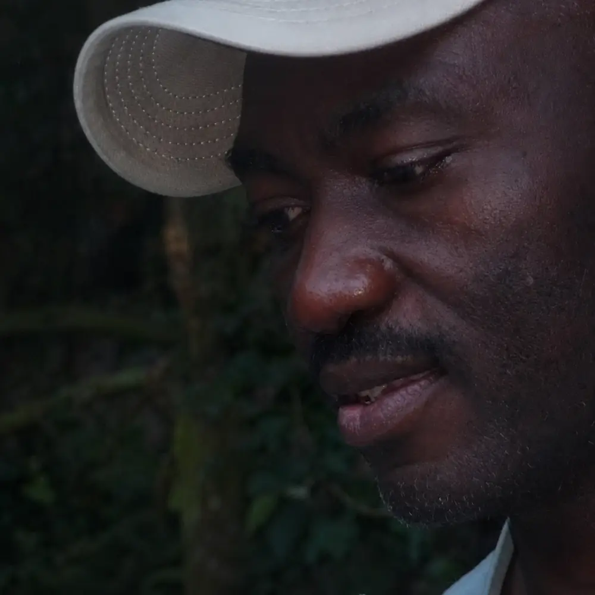

Identity
About
A House for the words, sounds, images, and stories that refuse to remain buried.
Some things are not gone. They are buried.
Beneath memory.
Beneath silence.
Beneath all we have learned
not to hear.
But buried things breathe.
And sometimes—if we become quiet enough—we can hear them.
The sound of something buried beginning to Breathe.
The House was created
to listen.
The House of Meadnyte is an independent creative house for literature, sound, cinema, visual art, and original story worlds.
It was created from a simple conviction: the things that move us most deeply do not always arrive in finished sentences. They surface as fragments—a remembered voice, an unanswered question, an image that will not leave, a rhythm felt before it is understood.
The Houselistens for those fragments.
It gives themlanguage.
It gives themform.
It gives them somewhere
to live.
Not everything buried is meant to remain there.
Some buried things ask to be remembered. Some ask to be witnessed. Some ask to be transformed into something another person can hold, hear, see, or recognize within themselves.
That is the work of the House.
One form was never going
to be enough.

The House of Meadnyte was founded by Aham E. Nwede—author, poet, storyteller, and the creative presence behind Meadnyte.
For Aham, creation begins with listening: to memory, to longing, to contradiction, to absurdity, to the worlds concealed inside ordinary life.
A poem may arrive carrying music.
A story may demand an image.
An image may begin to move.
A character may ask for a world.
Rather than force these impulses into one discipline, Aham created a House large enough to receive them all.
The House did not begin as a collection of products.
It began as a place the work required.
Here, the form follows the truth of the idea. Some ideas become books. Some become listening experiences. Some become films, images, performances, or imagined worlds.
Each is allowed to become what it was trying to be.
One House.
Many forms.
Across its rooms, the House creates and gathers work meant to be encountered—not merely consumed.
Literatureinvites the reader inward.
Soundgives breath, rhythm, and presence to language.
Moving imageallows stories to inhabit time, gesture, atmosphere, and silence.
Visual artgives form to what words can only approach.
Story worldspreserve wonder, mischief, memory, and imagination.
The forms are different.
The listening beneath them is the same.
The work does not end
when it is made.
It waits for an encounter.
A listener hears a buried feeling given voice.
A reader recognizes a thought they believed belonged only to them.
A viewer enters an unfamiliar world and returns seeing this one differently.
In that meeting, the work begins to breathe again.
You are not being asked to stand outside the House and admire it.
You are invited
to enter.
To listen.To look again.To stay with what moves you.To remember what the noise may have covered.
What has been buried
in you? Somewhere within the House, something may already be listening for it.